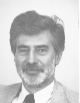

INFORMATION about Frank Allen
Information about Frank Allen

Dr Frank H. Allen
Council Member 1996-7, Vice President 1997 -
Election Address when Candidate for President in 1997
Graduate of Imperial College (BSc Chemistry 1965, PhD Phys. Chem.
- Crystallography 1968).
Postdoctoral Fellow at University of
British Columbia, Vancouver, 1968-70.
Joined University of Cambridge
as Research Assistant in 1970 (doing organic crystal structures)
just as the database work was beginning to take off.
Deputy Director of the CCDC since 1992.
Chair of IUCr Data Commission 1987-93,
Co-Editor Acta Cryst. 1986-90, Editor Section B 1993-date,
Member Protein Data Bank Advisory Board 1993-date,
Chair BCA Chem. Cryst. Group 1993-95,
Lecturer BCA Intensive Courses,
RSC Structural Chemistry Award, 1995.
The BCA has been fundamental in coalescing and representing UK
crystallography in a very positive manner. Part of my job is also to
represent crystallography, through its unique information output, to a very
broad spectrum of scientists worldwide. The strength of the BCA lies in
forging links, and I would want to continue that important process.
Brief Biography from the IUCr publication
'Crystallography Across the Sciences'
web site:
http://www.ccdc.cam.ac.uk
Award in 2003
The Herman Skolnik Award of the ACS DIv. of Chemical Information,
recognising outstanding contributions to and acheivements in the theory and practice of chemical information science will be presented at the FAll 2003 ACS meeting in New York to Frank Allen. Dr Allen became Executive Director of the CCDC in October 2002. He was the Editor of Acta Crystallographica
from 1993-2002 and held a range of positions in the BCA, ECA and IUCr.
He became a Fellow of the RSC in 1992. He was appointed to the Editorial Board of Chemical Communications in 1999 and to a Visiting Profesorship at the University of Bristol in 2002. he is a member of the International Advisory Board of the Protein Data Bank (RCSB) and has done much to promote the scientific value of all of the crystallographic databases in the international arena.
Bill Town,
CINF Awards Committee,
Assistant Chair
This file last updated 18 Mar 2003
BCA Home page WebMaster
BCA@ISISE.RL.AC.UK
 Click here to return to BCA homepage
Click here to return to BCA homepage